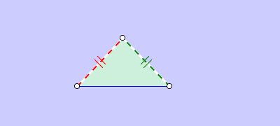

The Visual Effects of All Assertions .
Atomic Predicates:
| P1 | collinear A B C | A, B, and C are collinear |
| P2 | parallel A B C D | AB and CD are parallel |
| P3 | perpendicular A B C D | AB and CD are perpendicular |
| P4 | eq-distance A B C D | |AB| = |CD| |
| P5 | cyclic A B C D | A, B, C and D are cyclic |
| P6 | eq-angle [A B C D] [A1 B1 C1 D1] | full-angles ∠[ABCD] = ∠[A1B1C1D1] |
| P7 | eq-angle A B C A1 B1 C1 | traditional angles ∠ABC = ∠A1B1C1 |
| P8 | congruent A B C D E F | triangle ABC is congruent to triangle DEF |
| P9 | similiar A B C D E F | triangle ABC is similiar to triangle DEF |
| P10 | eq-ratio [A B C D] [A1 B1 C1 D1] | AB / CD = A1B1 / C1D1 |
Compounded Predicates
| P11 | midpoint M A B | M is the midpoint of AB, i.e., A, M, B are collinear and AM = MB |
| P12 | lratio C A B n m | A, B, C are collinear and AC / n = CB / m |
| P13 | pratio C D A B n m | AB and CD are parallel and CD / n = AB / m |
| P14 | tratio C D A B n m | AB and CD are perpendicular and CD / AB = n / m ;where n and m are two positive integers. |
Compounded Predicates (Construction-Related)
| P15 | triangle A B C | A, B, and C are not collinear |
| P16 | R-triangle C A B | AC ⊥ BC and A, B, and C are not collinear |
| P17 | iso-triangle C A B | CA = CB and A, B, C are not collinear |
| P18 | iso-right triangle C A B | BC ⊥ AC, BC = AC, A, B, and C are not collinear |
| P19 | foot D C A B | CD ⊥ AB, A, C and D are collinear, and AB is non-isotropic |
| P20 | equi-triangle A B C | AB = BC = CA, ∠ABC = ∠CAB∠BCA = 60◦. A, B, C are not collinear and are in the counter-clockwise orientation |
| P21 | trapezoid A B C D | AB and CD are parallel & AB and CD have the same direction, which is equivalent to AB and CD are parallel, where AB denotes the oriented segment of AB. Also we need a nondegenerate condition: A, B, and C are not collinear. |
| P22 | parallelogram A B C D | AB // CD, BC // AD, and A, B, C are not collinear |
| P23 | rectangle A B C D | Parallelogram A B C D and DA ⊥ BA |
| P24 | square A B C D | Rectangle A B C D and AB = AD |
Inequality Predicates:
| P25 | between A B C | A, B, and C are collinear, B != C, and A is between B and C |
| P26 | angle-inside D A B C | D is inside (traditional) angle ∠ ABC |
| P27 | angle-outside D A B C | D is outside ∠ ABC |
| P28 | triangle-inside D A B C | D is inside triangle ABC |
| P29 | paral-inside E A B C D | E is inside parallelogram ABCD |
| P30 | opposite-side C D A B | C and D are on the opposite sides of line AB, and A != B |
| P31 | same-side C D A B | points C and D are on the same side of line AB , and A != B |
| P32 | AB < DC | segment AB is less than segment DC |
| P33 | ∠ ABC < ∠ CDE | ∠ ABC < ∠ CDE |
| P34 | The (n + 1)-polygon A0A1A2 . . . An is convex (n ≥ 3). | points Ai and Ai+3 are on the same side of line Ai+1Ai+2, where indexes are understood mod n + 1. |
The Visual Effects of All Predicates.
P1. collinear A, B, C
Points A, B, C and line ABC are all highlighted.

P2. parallel A, B, C, D
Two endless lines are drawn to overlap linesAB and CD. The points on the two lines are highlighted also.

P3. perpendicular A, B, C, D
Segments AB and CD are highlighted and a foot mark is drawn on the diagram.

P4. eq-distance A, B, C, D
AB and CD are highlighted and a copy of AB is moved on the fly to overlap CD.


P5. cyclic A, B, C, D
Draw an auxiliary circle, and highlight the points A, B, C, D.

P6. eq-angle [A B C D] [A1 B1 C1 D1]
full-angles ∠[ABCD] = ∠[A1B1C1D1]

P7. eq-angle A B C A1 B1 C1
traditional angles ∠ABC = ∠A1B1C1

P8. cogruent A, B, C, D, E, F
The program moves a copy of color-filled triangle ABC on the fly by a rotation followed by a translation, possibly with a flip (reflection) if the orientations of the two triangles are opposite, and drops it to the position of the triangle DEF, at last blinks the corresponding sides of the two triangles alternately.


P9. similiar A, B, C, D, E, F
A copy of triangle ABC first scales to the size of triangle DEF on the fly so that the two triangles can fit. The other visual effects are the same as those for two congruent triangles mentioned above.


P10. eq-ratio [A B C D] [A1 B1 C1 D1]
AB / CD = A1B1 / C1D1
P11. midpoint M A B
M is the midpoint of AB, i.e., A, M, B are collinear and AM = MB. The Effects is same as P4.

P12. lratio C A B n m
P13. pratio C D A B n m
P14. tratio C D A B n m
Two related segements are highlighted.

P15. triangle A B C
triangle ABC are filled with color.

P16. R-triangle C A B
Combination of P3 and P13.

P17. iso-triangle C A B
Combination of P3 and P13.

P18. iso-right triangle C A B
Combination of P3 and P13.

P19. foot D C A B
Same as P16.

P20. equi-triangle A B C
triangle ABC is filled with default color and three equal mark are put on each segments.

P21. trapezoid A B C D
P22. parallelogram A B C D
P23. rectangle A B C D
P24. square A B C D

P25. between A B C
Combination.

P26. angle-inside D A B C
Combination of P3 and P13.

P27. angle-outside D A B C
Combination of P3 and P13.

P28. triangle-inside D A B C
The triangle ABC is filled with default color and the point D is drawn with a slight longer radius.

P29. paral-inside E A B C D
the parallelogram ABCD is filled with default color. Point E is drawn with a slight longer radius to make it stand out.

P30. opposite-side C D A B
An endless line is drawn to overlap segment AB.

P31. same-side C D A B
An endless line is drawn to overlap segment AB. Two arrows start from this line and point to C and D respectively are drawn.

P32. AB < DC
The segments AB and CD are highlighted respectively.

P33. ∠ ABC < ∠ CDE
Draw two traditional angle with value and blink.

P34. The (n + 1)-polygon A0A1A2 . . . An is convex (n ≥ 3).
We just fill the polygon with default color and blink its.

JGEX Help